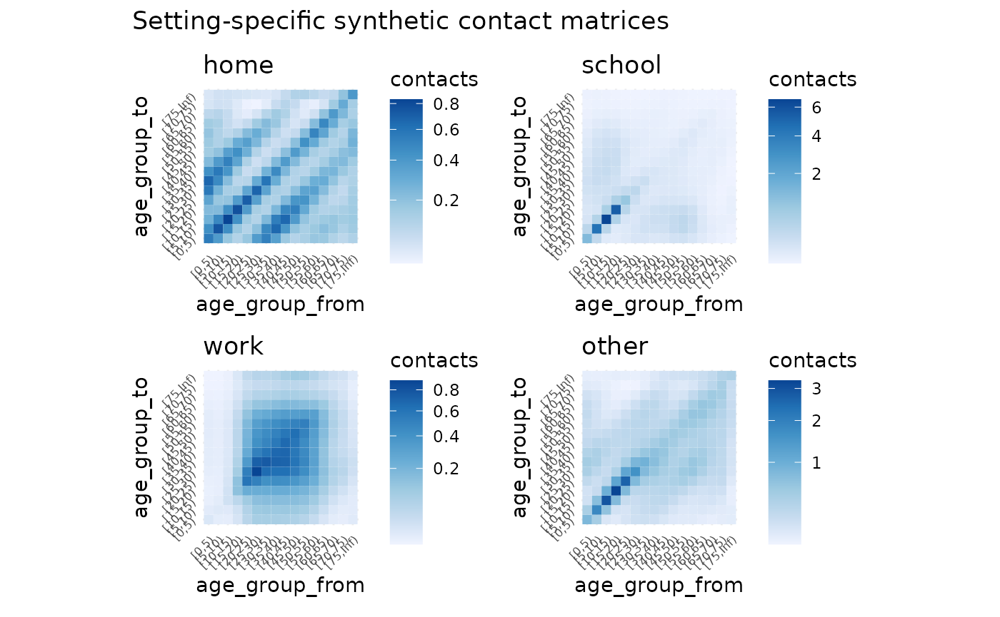
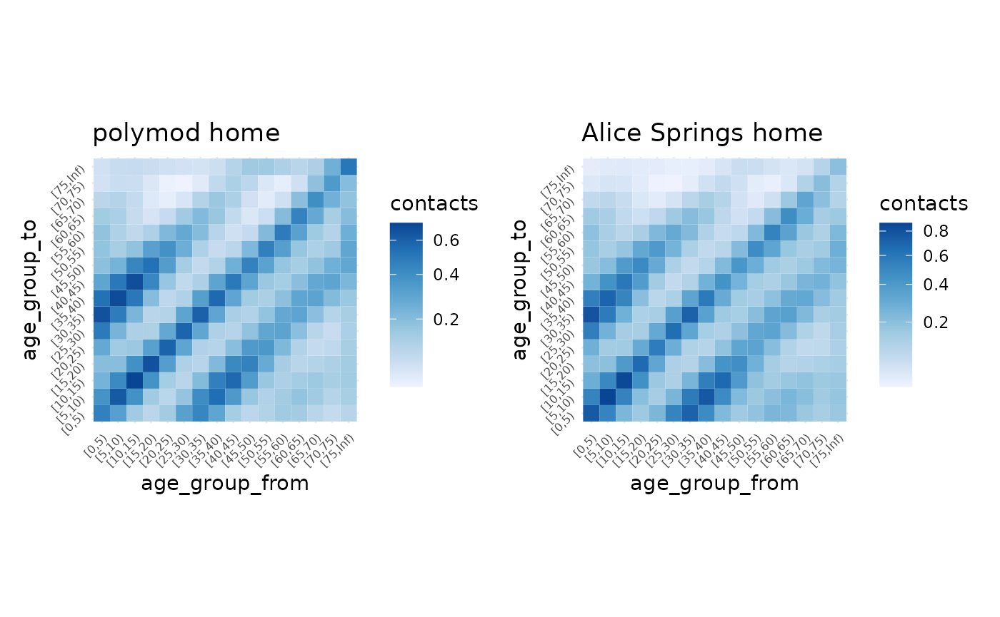
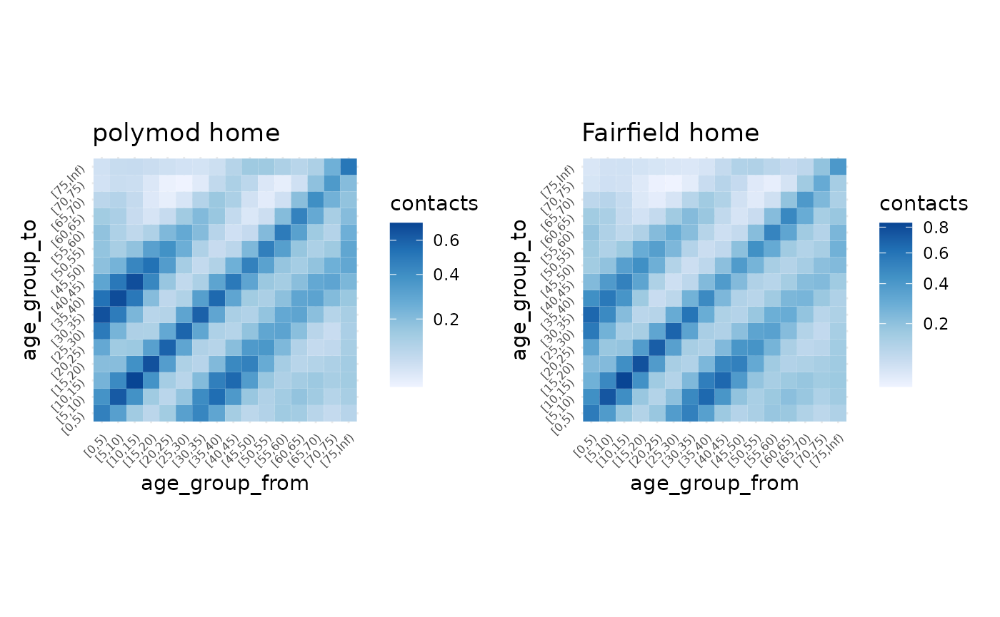

Getting Started
getting-started.Rmd
library(conmat)
library(socialmixr)
#>
#> Attaching package: 'socialmixr'
#> The following object is masked from 'package:utils':
#>
#> cite
library(ggplot2)
library(dplyr)
#>
#> Attaching package: 'dplyr'
#> The following objects are masked from 'package:stats':
#>
#> filter, lag
#> The following objects are masked from 'package:base':
#>
#> intersect, setdiff, setequal, union
library(tidyr)
library(mgcv)
#> Loading required package: nlme
#>
#> Attaching package: 'nlme'
#> The following object is masked from 'package:dplyr':
#>
#> collapse
#> This is mgcv 1.8-41. For overview type 'help("mgcv-package")'.
library(patchwork)The goal of conmat is to make it easy to generate synthetic contact matrices for a given age population.
What is a contact matrix?
Contact matrices describe the degree of contact between individuals of given age groups.
For example, this matrix describes the number of contacts between individuals
#> 0-4 5-9 10-14
#> 0-4 10 3 4
#> 5-9 3 11 5
#> 10-14 4 5 13The rows and columns represent the age groups of the people. On the main diagonal we see that we have a higher number of contacts - showing that people of similar ages tend to interact more with one another.
We can use the information in these matrices to model how diseases such as COVID-19 spread in a population through social contact.
Why do we need synthetic contact matrices?
Contact matrices are produced from empirical data resulting from a contact survey, which requires individuals to diary the amount and manner of contact a person has in a day.
However, these surveys are highly time-consuming and expensive to run, meaning that only a handful of these empirical datasets exist globally.
We can use statistical methods to create synthetic contact matrices, which are new contact matrices that have been generalised to new countries based on existing surveys.
Why do we need conmat?
Existing methods only provide outputs of the contact matrices for each country, or at best, for urban and rural areas for a given country.
We need methods that allow for flexibly creating synthetic contact matrices for a specified age population, as the age population distribution of many countries (e.g., Australia), are quite heterogeneous, and assuming it is homogeneous would result in inaccurate representation of community infection in many regions.
Example
First we want to fit the model to the POLYMOD data, which contains various survey and population data.
library(conmat)
polymod_contact_data_home <- get_polymod_contact_data(setting = "home")
polymod_survey_data <- get_polymod_population()The contact data is a data frame containing the age from and to, and
the number of contacts for each of the specified settings, “home”,
“work”, “school”, “other”, or “all” as well as the number of
participants. By default, polymod_contact_data contains
data from “all”, but we’re going to use the “work” set of data, as it
produces an interesting looking dataset. Each row contains survey
information of the number of contacts. Specifically, the number of
contacts from one age group to another age group, and then the number of
participants in that age group.
The survey data, polymod_survey_data contains the lower
age limit and the population in that age group.
polymod_survey_data
#> # A tibble: 21 × 2
#> lower.age.limit population
#> <int> <dbl>
#> 1 0 1852682.
#> 2 5 1968449.
#> 3 10 2138897.
#> 4 15 2312032.
#> 5 20 2407486.
#> 6 25 2423602.
#> 7 30 2585137.
#> 8 35 2969393.
#> 9 40 3041663.
#> 10 45 2809154.
#> # … with 11 more rowsWe also provide control over the POLYMOD data retrieved from
get_polymod_contact_data() via the arguments,
setting, country, and ages. These
allow you to specify the data to be only from certain settings or
countries or ages. See ?get_polymod_contact_data for more
details. Below is a brief example of this:
polymod_contact_data_belgium_0_10 <- get_polymod_contact_data(
setting = "work",
countries = "Belgium",
ages = c(0,5,10)
)
polymod_contact_data_belgium_0_10
#> # A tibble: 3,434 × 5
#> setting age_from age_to contacts participants
#> <chr> <int> <dbl> <int> <int>
#> 1 work 0 0 0 5
#> 2 work 0 1 0 2
#> 3 work 0 2 0 2
#> 4 work 0 3 0 1
#> 5 work 0 4 0 1
#> 6 work 0 5 0 5
#> 7 work 0 7 0 1
#> 8 work 0 10 0 5
#> 9 work 0 11 0 1
#> 10 work 0 12 0 1
#> # … with 3,424 more rowsSimilarly, you can control the population data, retrieving it only for certain countries:
get_polymod_population(countries = "Belgium")
#> # A tibble: 21 × 2
#> lower.age.limit population
#> <int> <dbl>
#> 1 0 583492
#> 2 5 593148
#> 3 10 632157
#> 4 15 626921
#> 5 20 649588
#> 6 25 663176
#> 7 30 705878
#> 8 35 773177
#> 9 40 823305
#> 10 45 779436
#> # … with 11 more rows
get_polymod_population(countries = "Finland")
#> # A tibble: 21 × 2
#> lower.age.limit population
#> <int> <dbl>
#> 1 0 284683
#> 2 5 296753
#> 3 10 330425
#> 4 15 319947
#> 5 20 334180
#> 6 25 331510
#> 7 30 308108
#> 8 35 352962
#> 9 40 379090
#> 10 45 381713
#> # … with 11 more rowsYou can see the available countries in the helpfile with
?get_polymod_population.
Predicting the contact rate
We can create a model of the contact rate with the function
fit_single_contact_model. We’re first going to use some
smaller sets of the data, to save on computation time.
set.seed(2022-10-04)
polymod_contact_data_home_small <- polymod_contact_data_home %>%
filter(age_from <= 30,
age_to <= 30)
polymod_survey_data_small <- polymod_survey_data %>%
filter(lower.age.limit <= 30)
contact_model <- fit_single_contact_model(
contact_data = polymod_contact_data_home_small,
population = polymod_survey_data_small
)This fits a generalised additive model (GAM), predicting the contact rate, based on a series of prediction terms that describe various features of the contact rates.
contact_model
#>
#> Family: poisson
#> Link function: log
#>
#> Formula:
#> contacts ~ s(gam_age_offdiag) + s(gam_age_offdiag_2) + s(gam_age_diag_prod) +
#> s(gam_age_diag_sum) + s(gam_age_pmax) + s(gam_age_pmin) +
#> school_probability + work_probability + offset(log_contactable_population)
#>
#> Estimated degrees of freedom:
#> 7.10 1.00 4.87 1.00 5.63 4.25 total = 26.86
#>
#> fREML score: 1648.48 rank: 55/57We can use this contact model to then predict the contact rate in a new population.
As a demonstration, let’s take an age population from a given LGA in Australia (this was the initial motivation for the package, so there are some helper functions for Australian specific data).
fairfield_age_pop <- abs_age_lga("Fairfield (C)")
fairfield_age_pop
#> # A tibble: 18 × 4
#> lga lower.age.limit year population
#> <chr> <dbl> <dbl> <dbl>
#> 1 Fairfield (C) 0 2020 12261
#> 2 Fairfield (C) 5 2020 13093
#> 3 Fairfield (C) 10 2020 13602
#> 4 Fairfield (C) 15 2020 14323
#> 5 Fairfield (C) 20 2020 15932
#> 6 Fairfield (C) 25 2020 16190
#> 7 Fairfield (C) 30 2020 14134
#> 8 Fairfield (C) 35 2020 13034
#> 9 Fairfield (C) 40 2020 12217
#> 10 Fairfield (C) 45 2020 13449
#> 11 Fairfield (C) 50 2020 13419
#> 12 Fairfield (C) 55 2020 13652
#> 13 Fairfield (C) 60 2020 12907
#> 14 Fairfield (C) 65 2020 10541
#> 15 Fairfield (C) 70 2020 8227
#> 16 Fairfield (C) 75 2020 5598
#> 17 Fairfield (C) 80 2020 4006
#> 18 Fairfield (C) 85 2020 4240We can then pass the contact model through to
predict_contacts, along with the fairfield age population
data, and some age breaks that we want to predict to. Note that these
age breaks could be any size, we just ahve them set to 5 year age
brackets in most of the examples, but these could be 1 year, 2 year, or
even sub year.
set.seed(2022-10-04)
synthetic_contact_fairfield <- predict_contacts(
model = contact_model,
population = fairfield_age_pop,
age_breaks = c(seq(0, 30, by = 5), Inf)
)
synthetic_contact_fairfield
#> # A tibble: 49 × 3
#> age_group_from age_group_to contacts
#> <fct> <fct> <dbl>
#> 1 [0,5) [0,5) 1.80e- 1
#> 2 [0,5) [5,10) 1.61e- 1
#> 3 [0,5) [10,15) 8.56e- 2
#> 4 [0,5) [15,20) 5.65e- 2
#> 5 [0,5) [20,25) 8.68e- 2
#> 6 [0,5) [25,30) 1.79e- 1
#> 7 [0,5) [30,Inf) 5.21e+18
#> 8 [5,10) [0,5) 1.53e- 1
#> 9 [5,10) [5,10) 2.51e- 1
#> 10 [5,10) [10,15) 1.88e- 1
#> # … with 39 more rowsPlotting
Let’s visualise the matrix to get a sense of the predictions with
autoplot. First we need to transform the predictions to a
matrix:
synthetic_contact_fairfield %>%
predictions_to_matrix() %>%
autoplot()
Note
It is worth noting that the contact matrices created using this package are transposed when compared to the contact matrices discussed by Prem and Mossong. That is, the rows are “age group to”, and the columns are “age group from”.
Applying the model across all settings.
Our experience has been that we would be fitting the same models to
each setting when doing data analysis when using conmat. Accordingly,
you can also fit a model for all of the settings all at once with the
functions, fit_setting_contacts(), and
predict_setting_contacts(). This means we can do the above,
but for each setting, “home”, “work”, “school”, “other”, and “all”, at
once. If we want to use all of the POLYMOD data, we can also use the
extrapolate_polymod() function.
Fit to all settings
We can create a model for each of the settings with
fit_setting_contacts().
set.seed(2021-09-24)
polymod_setting_data <- get_polymod_setting_data()
polymod_setting_data_small <- polymod_setting_data %>%
lapply(FUN = function(x) x %>% filter(age_from <= 20, age_to <= 20))
setting_models <- fit_setting_contacts(
contact_data_list = polymod_setting_data_small,
population = polymod_survey_data
)
#> Warning in bgam.fit(G, mf, chunk.size, gp, scale, gamma, method = method, :
#> algorithm did not convergeThis contains a list of models, one for each setting. We can look at one, and get summary information out:
names(setting_models)
#> [1] "home" "work" "school" "other"
setting_models$home
#>
#> Family: poisson
#> Link function: log
#>
#> Formula:
#> contacts ~ s(gam_age_offdiag) + s(gam_age_offdiag_2) + s(gam_age_diag_prod) +
#> s(gam_age_diag_sum) + s(gam_age_pmax) + s(gam_age_pmin) +
#> school_probability + work_probability + offset(log_contactable_population)
#>
#> Estimated degrees of freedom:
#> 6.145 1.000 4.845 1.000 0.687 4.474 total = 21.15
#>
#> fREML score: 785.6112 rank: 55/57So this gives us our baseline model of a contact model. We have fit this model to the existing contact survey data. We can now predict to another age population, to create our “synthetic” contact matrix.
Predict to all settings
Then we take the model we had earlier, and extrapolate to the
fairfield data with predict_setting_contacts, also
providing some age breaks we want to predict to
set.seed(2021-10-04)
synthetic_settings_5y_fairfield <- predict_setting_contacts(
population = fairfield_age_pop,
contact_model = setting_models,
age_breaks = c(seq(0, 20, by = 5), Inf)
)This then returns a list of synthetic matrices, “home”, “work”, “school”, “other”, and “all”, which is the sum of all matrices.
str(synthetic_settings_5y_fairfield)
#> List of 5
#> $ home : 'conmat_prediction_matrix' num [1:5, 1:5] 1.16e-01 1.04e-01 5.73e-02 3.52e-02 2.21e+33 ...
#> ..- attr(*, "dimnames")=List of 2
#> .. ..$ : chr [1:5] "[0,5)" "[5,10)" "[10,15)" "[15,20)" ...
#> .. ..$ : chr [1:5] "[0,5)" "[5,10)" "[10,15)" "[15,20)" ...
#> $ work : 'conmat_prediction_matrix' num [1:5, 1:5] 0.000201 0.000192 0.000105 0.002279 0.000203 ...
#> ..- attr(*, "dimnames")=List of 2
#> .. ..$ : chr [1:5] "[0,5)" "[5,10)" "[10,15)" "[15,20)" ...
#> .. ..$ : chr [1:5] "[0,5)" "[5,10)" "[10,15)" "[15,20)" ...
#> $ school: 'conmat_prediction_matrix' num [1:5, 1:5] 0.77218 0.14825 0.00901 0.00888 Inf ...
#> ..- attr(*, "dimnames")=List of 2
#> .. ..$ : chr [1:5] "[0,5)" "[5,10)" "[10,15)" "[15,20)" ...
#> .. ..$ : chr [1:5] "[0,5)" "[5,10)" "[10,15)" "[15,20)" ...
#> $ other : 'conmat_prediction_matrix' num [1:5, 1:5] 1.64e-01 9.85e-02 3.95e-02 2.58e-02 5.24e+41 ...
#> ..- attr(*, "dimnames")=List of 2
#> .. ..$ : chr [1:5] "[0,5)" "[5,10)" "[10,15)" "[15,20)" ...
#> .. ..$ : chr [1:5] "[0,5)" "[5,10)" "[10,15)" "[15,20)" ...
#> $ all : 'conmat_prediction_matrix' num [1:5, 1:5] 1.0518 0.3509 0.1059 0.0721 Inf ...
#> ..- attr(*, "dimnames")=List of 2
#> .. ..$ : chr [1:5] "[0,5)" "[5,10)" "[10,15)" "[15,20)" ...
#> .. ..$ : chr [1:5] "[0,5)" "[5,10)" "[10,15)" "[15,20)" ...
#> - attr(*, "class")= chr [1:2] "conmat_setting_prediction_matrix" "list"
synthetic_settings_5y_fairfield$home
#> [0,5) [5,10) [10,15) [15,20) [20,Inf)
#> [0,5) 1.155808e-01 9.833518e-02 5.148435e-02 2.960689e-02 1.719021e+32
#> [5,10) 1.039830e-01 1.571624e-01 1.141579e-01 4.086305e-02 9.175598e+25
#> [10,15) 5.731958e-02 1.201933e-01 1.887684e-01 9.963227e-02 9.813571e+20
#> [15,20) 3.517148e-02 4.590661e-02 1.063090e-01 1.658309e-01 2.277138e+16
#> [20,Inf) 2.210238e+33 1.115678e+27 1.133332e+22 2.464616e+17 4.391374e+12
synthetic_settings_5y_fairfield$all
#> [0,5) [5,10) [10,15) [15,20) [20,Inf)
#> [0,5) 1.05181207 0.3328449 0.0951143 0.06069717 Inf
#> [5,10) 0.35087372 4.6920504 0.5251319 0.09017305 Inf
#> [10,15) 0.10589455 0.5507981 6.7431490 0.57914280 Inf
#> [15,20) 0.07210516 0.1013027 0.6145379 4.91889407 Inf
#> [20,Inf) Inf Inf Inf Inf InfWe can use autoplot to plot all at once
# this code is erroring for the moment - something to do with rendering a large plot I think.
autoplot(
synthetic_settings_5y_fairfield,
title = "Setting-specific synthetic contact matrices (fairfield 2020 projected)"
)
Speeding up computation with future
conmat supports parallelisation, which is useful in a
couple of contexts with the model fitting, here is an example:
We set the future plan, saying “multisession”, with 4 workers. Then we run the same code as above (note that you must specify the plan, otherwise it does not know how to parallelise. See the future package documentation for more details):
contact_model <- fit_setting_contacts(
contact_data_list = polymod_setting_data_small,
population = polymod_survey_data_small
)
contact_model_pred <- predict_setting_contacts(
population = polymod_survey_data_small,
contact_model = contact_model,
age_breaks = c(seq(0, 20, by = 5), Inf)
)Notably this is about 3 times faster than without using that plan.
Extrapolate from all POLYMOD data
The above model fitting and prediction steps are all done on the full POLYMOD data. But you could modify the polymod data used in the model, to say be only for Finland, or Germany, or a specific age group.
However, if you want to predict to all settings, using the full
POLYMOD data, to a specific new age population, you can use
extrapolate_polymod, which takes arguments for a new
population, age breaks, and optionally household per capita size. By
default it uses 5 year age breaks from 0-75, then 75 and above.
We can demonstrate fitting a model using just Fairfield data, like so:
# compute setting-specific and combined age matrices for polymod
synthetic_settings_5y_fairfield <- extrapolate_polymod(
population = fairfield_age_pop
)
autoplot(synthetic_settings_5y_fairfield)
We can also do the same, for the polymod data itself:
# compute setting-specific and combined age matrices for polymod
polymod_population <- get_polymod_population()
synthetic_settings_5y_polymod <- extrapolate_polymod(
population = polymod_population
)
autoplot(synthetic_settings_5y_polymod)
And for fun we can compare some of the data together, say polymod
data for home against fairfield home, using the patchwork
package:
library(patchwork)
gg_polymod_home <- autoplot(synthetic_settings_5y_polymod$home) +
labs(title = "polymod home")
gg_fairfield_home <- autoplot(synthetic_settings_5y_fairfield$home) +
labs(title = "Fairfield home")
gg_polymod_home + gg_fairfield_home
This might not look that different, but we can compare this to Alice Springs
synthetic_settings_5y_alice <- extrapolate_polymod(
population = abs_age_lga("Alice Springs (T)")
)
gg_alice_home <- autoplot(synthetic_settings_5y_alice$home) +
labs(title = "Alice Springs home")
gg_polymod_home + gg_alice_home
gg_polymod_home + gg_fairfield_home
We can use some other functions from socialmixr to
extract similar estimates for different populations in different
countries.
library(socialmixr)
italy_2005 <- wpp_age("Italy", "2005")
italy_2005
#> country lower.age.limit year population
#> 1 Italy 0 2005 2758749
#> 2 Italy 5 2005 2712790
#> 3 Italy 10 2005 2815246
#> 4 Italy 15 2005 2917476
#> 5 Italy 20 2005 3168918
#> 6 Italy 25 2005 3786584
#> 7 Italy 30 2005 4553115
#> 8 Italy 35 2005 4797005
#> 9 Italy 40 2005 4701976
#> 10 Italy 45 2005 4136438
#> 11 Italy 50 2005 3827458
#> 12 Italy 55 2005 3877700
#> 13 Italy 60 2005 3261850
#> 14 Italy 65 2005 3322436
#> 15 Italy 70 2005 2858787
#> 16 Italy 75 2005 2379461
#> 17 Italy 80 2005 1740071
#> 18 Italy 85 2005 709878
#> 19 Italy 90 2005 392976
#> 20 Italy 95 2005 82042
#> 21 Italy 100 2005 7525This italian population data could then be put into
extrapolate_polymod as above.
For interest’s sake: visualising the empirical contact rate data
# visualise empirical contact rate estimates
bind_rows(
home = get_polymod_contact_data("home"),
school = get_polymod_contact_data("school"),
work = get_polymod_contact_data("work"),
other = get_polymod_contact_data("other"),
.id = "setting"
) %>%
mutate(
rate = contacts / participants,
setting = factor(
setting,
levels = c(
"home", "school", "work", "other"
)
)
) %>%
group_by(
setting
) %>%
mutate(
`relative contact rate` = rate / max(rate)
) %>%
ungroup() %>%
ggplot(
aes(
x = age_from,
y = age_to,
fill = `relative contact rate`
)
) +
facet_wrap(
~ setting,
ncol = 2,
scales = "free"
) +
geom_tile() +
scale_fill_distiller(
direction = 1,
trans = "sqrt"
) +
theme_minimal()